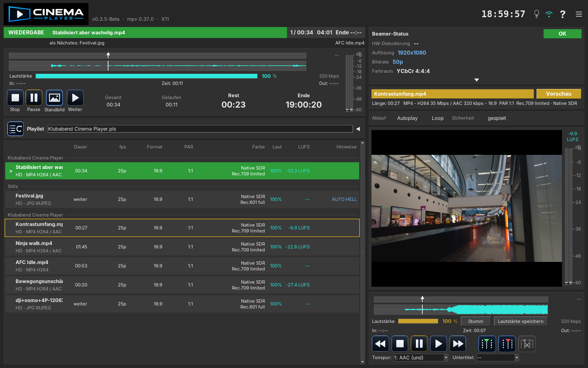

Die Leinwand zeigt nur den Film. Die Steuerung bleibt auf dem Monitor in der Kabine.

Reine Leinwand
Cinema Player trennt Bild und Bedienung über zwei Ausgänge der Grafikkarte. Auf dem Beamer liegt das Programm, ohne Menüs und ohne Einblendungen.
Läuft gerade nichts, bleibt die Leinwand schwarz. Status, Playlist und Vorschau sieht der Vorführer auf dem eigenen Monitor.